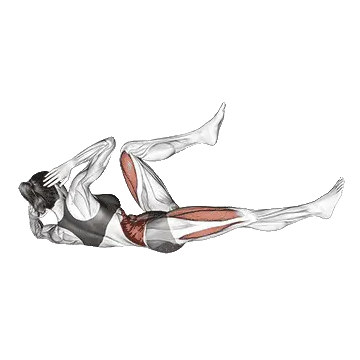

中級の平均レップ数
平均的な中級者の目安です。
男性
42
女性
26
バイシクルクランチ 平均レップ数
| レベル | ||
|---|---|---|
| 基礎 | < 1 | < 1 |
| 初級 | 10 | 8 |
| 中級 | 42 | 26 |
| 上級 | 84 | 49 |
| プロ | 132 | 74 |
注：これらの基準は1セットで行える平均レップ数の目安です。体重、可動域、テンポなどの個人的要因によって変わります。より詳細なデータは以下のとおりです。
バイシクルクランチ 基準レップ数
男性・体重別(kg)データ [レップ数]
| 体重 | 基礎 | 初級 | 中級 | 上級 | プロ |
|---|---|---|---|---|---|
| 50 | < 1 | 22 | 67 | 126 | 195 |
| 55 | < 1 | 19 | 60 | 114 | 177 |
| 60 | < 1 | 16 | 55 | 104 | 163 |
| 65 | < 1 | 14 | 50 | 96 | 150 |
| 70 | < 1 | 12 | 45 | 88 | 139 |
| 75 | < 1 | 10 | 41 | 82 | 129 |
| 80 | < 1 | 9 | 38 | 76 | 121 |
| 85 | < 1 | 8 | 35 | 71 | 113 |
| 90 | < 1 | 6 | 32 | 66 | 107 |
| 95 | < 1 | 5 | 29 | 62 | 100 |
| 100 | < 1 | 4 | 27 | 58 | 95 |
| 105 | < 1 | 3 | 25 | 55 | 90 |
| 110 | < 1 | 2 | 23 | 52 | 85 |
| 115 | < 1 | < 1 | 21 | 49 | 81 |
| 120 | < 1 | < 1 | 20 | 46 | 77 |
| 125 | < 1 | < 1 | 18 | 44 | 73 |
| 130 | < 1 | < 1 | 17 | 41 | 70 |
| 135 | < 1 | < 1 | 15 | 39 | 67 |
| 140 | < 1 | < 1 | 14 | 37 | 64 |
男性・年齢別データ [レップ数]
| 年齢 | 基礎 | 初級 | 中級 | 上級 | プロ |
|---|---|---|---|---|---|
| 15 | < 1 | 6 | 32 | 67 | 108 |
| 20 | < 1 | 10 | 41 | 81 | 128 |
| 25 | < 1 | 10 | 42 | 84 | 132 |
| 30 | < 1 | 10 | 42 | 84 | 132 |
| 35 | < 1 | 10 | 42 | 84 | 132 |
| 40 | < 1 | 10 | 42 | 84 | 132 |
| 45 | < 1 | 9 | 39 | 78 | 124 |
| 50 | < 1 | 7 | 35 | 72 | 115 |
| 55 | < 1 | 5 | 30 | 64 | 104 |
| 60 | < 1 | 1 | 25 | 56 | 92 |
| 65 | < 1 | < 1 | 19 | 48 | 81 |
| 70 | < 1 | < 1 | 14 | 40 | 69 |
| 75 | < 1 | < 1 | 10 | 32 | 59 |
| 80 | < 1 | < 1 | 7 | 26 | 49 |
| 85 | < 1 | < 1 | 3 | 20 | 41 |
| 90 | < 1 | < 1 | < 1 | 15 | 34 |
女性・体重別(kg)データ [レップ数]
| 体重 | 基礎 | 初級 | 中級 | 上級 | プロ |
|---|---|---|---|---|---|
| 40 | < 1 | 6 | 26 | 53 | 83 |
| 45 | < 1 | 7 | 26 | 52 | 80 |
| 50 | < 1 | 8 | 27 | 50 | 77 |
| 55 | < 1 | 8 | 26 | 49 | 74 |
| 60 | < 1 | 9 | 26 | 47 | 71 |
| 65 | < 1 | 9 | 26 | 46 | 68 |
| 70 | < 1 | 9 | 25 | 44 | 66 |
| 75 | < 1 | 9 | 24 | 43 | 64 |
| 80 | < 1 | 9 | 24 | 42 | 61 |
| 85 | < 1 | 9 | 23 | 40 | 59 |
| 90 | < 1 | 9 | 22 | 39 | 57 |
| 95 | < 1 | 9 | 22 | 38 | 55 |
| 100 | < 1 | 8 | 21 | 37 | 53 |
| 105 | < 1 | 8 | 20 | 35 | 52 |
| 110 | < 1 | 8 | 20 | 34 | 50 |
| 115 | < 1 | 8 | 19 | 33 | 48 |
| 120 | < 1 | 7 | 18 | 32 | 47 |
女性・年齢別データ [レップ数]
| 年齢 | 基礎 | 初級 | 中級 | 上級 | プロ |
|---|---|---|---|---|---|
| 15 | < 1 | 3 | 18 | 37 | 59 |
| 20 | < 1 | 7 | 24 | 47 | 72 |
| 25 | < 1 | 8 | 26 | 49 | 74 |
| 30 | < 1 | 8 | 26 | 49 | 74 |
| 35 | < 1 | 8 | 26 | 49 | 74 |
| 40 | < 1 | 8 | 26 | 49 | 74 |
| 45 | < 1 | 6 | 23 | 45 | 69 |
| 50 | < 1 | 4 | 20 | 40 | 63 |
| 55 | < 1 | 1 | 16 | 35 | 56 |
| 60 | < 1 | < 1 | 12 | 29 | 49 |
| 65 | < 1 | < 1 | 9 | 24 | 41 |
| 70 | < 1 | < 1 | 6 | 18 | 34 |
| 75 | < 1 | < 1 | 2 | 13 | 27 |
| 80 | < 1 | < 1 | < 1 | 9 | 21 |
| 85 | < 1 | < 1 | < 1 | 6 | 16 |
| 90 | < 1 | < 1 | < 1 | 2 | 11 |
注：表中の数値は1セットで行えるレップ数の目安です。体重別は相対負荷、年齢別は傾向の違いを見るために使えます。
鍛えられる筋肉
| グループ | 筋肉 |
|---|---|
| 主働筋 | 腹直筋, 外腹斜筋 |
| 副働筋 | なし |
| 安定筋 | 大腿四頭筋, 脊柱起立筋 |
| グリップ | なし |
記録と分析はShibaアプリで
重量、回数、成長の変化をまとめて確認できます。
テーブルの見方
| レベル | 説明 | 分布 |
|---|---|---|
| 基礎 | 正しいフォームを身につけ、1か月以上継続してトレーニングに励む。 | 下位 5% |
| 初級 | 6か月以上継続的にトレーニングに励む。 | 上位 80% |
| 中級 | ２年以上継続的にトレーニングに励む。 | 上位 50% |
| 上級 | 5年以上継続的にトレーニングに励む。 | 上位 20% |
| プロ | 5年以上当該メニューを専門にトレーニング。 | 上位 5% |
その他のワークアウト
全身
デッドリフト
全身 / BIG3
ベンチプレス
全身 / BIG3
スクワット
全身 / BIG3
ヘックスバーデッドリフト
全身
パワークリーン
全身
ルーマニアンデッドリフト
全身
相撲デッドリフト
全身
クリーン&ジャーク
全身
スナッチ
全身
クリーン
全身
クリーン&プレス
全身
ラックプル
全身
ダンベルルーマニアンデッドリフト
全身 / ダンベル
ハングクリーン
全身
スティフレッグデッドリフト
全身
マッスルアップ
全身 / 自重
パワースナッチ
全身
スラスター
全身
プッシュジャーク
全身
ダンベルデッドリフト
全身 / ダンベル
ディフィシットデッドリフト
全身
片足ルーマニアンデッドリフト
全身
バーピージャンプ
全身 / 自重
ハングパワークリーン
全身
スプリットジャーク
全身
ダンベルスナッチ
全身 / ダンベル
クリーンハイプル
全身
スナッチデッドリフト
全身
クリーンプル
全身
ポーズデッドリフト
全身
片足デッドリフト
全身
マッスルスナッチ
全身
ジェファーソンデッドリフト
全身
スナッチプル
全身
ウォールボール
全身
ザーチャーデッドリフト
全身
片足ダンベルデッドリフト
全身 / ダンベル
ダンベルクリーン&プレス
全身 / ダンベル
リングマッスルアップ
全身 / 自重
ダンベルスラスター
全身 / ダンベル
ハングスナッチ
全身
ダンベルハイプル
全身 / ダンベル
ダンベルハングクリーン
全身 / ダンベル
後背デッドリフト
全身
クラッププルアップ
全身 / 自重
スクワットスラスト
全身
胸
ベンチプレス
胸 / BIG3
ダンベルベンチプレス
胸 / ダンベル
腕立て伏せ
胸 / 自重
インクラインベンチプレス
胸
インクラインダンベルベンチプレス
胸 / ダンベル
クロースグリップベンチプレス
胸
マシーンチェストフライ
胸 / マシン
ダンベルフライ
胸 / ダンベル
デクラインダンベルフライ
胸 / ダンベル
デクラインベンチプレス
胸
スミスマシーンベンチプレス
胸 / マシン
ケーブルフライ
胸 / ケーブル
チェストプレス
胸
フロアプレス
胸
インクラインダンベルフライ
胸 / ダンベル
ダンベルフロアプレス
胸 / ダンベル
デクラインダンベルベンチプレス
胸 / ダンベル
ポーズベンチプレス
胸
片腕立て伏せ
胸 / 自重
逆手ベンチプレス
胸
ダイヤモンドプッシュアップ
胸 / 自重
クロースグリップダンベルベンチプレス
胸 / ダンベル
ベンチピンプレス
胸
ワイドグリップベンチプレス
胸
デクライン腕立て伏せ
胸 / 自重
クロースグリップインクラインベンチプレス
胸
インクライン腕立て伏せ
胸 / 自重
クロースグリップ腕立て伏せ
胸 / 自重
アーチャープッシュアップ
胸 / 自重
スポトプレス
胸
背中
デッドリフト
背中 / BIG3
懸垂
背中 / 自重
ベントオーバーロウ
背中
ラットプルダウン
背中
チンニング
背中 / 自重
ダンベルロウ
背中 / ダンベル
シーテッドケーブルロウ
背中 / ケーブル
バーベルシュラッグ
背中 / バーベル
Tバーロウ
背中
ダンベルシュラッグ
背中 / ダンベル
ペンドレイロウ
背中
マシーンロウ
背中 / マシン
ダンベルプルオーバー
背中 / ダンベル
ダンベルリバースフライ
背中 / ダンベル
チェストサポートダンベルロウ
背中 / ダンベル
クロースグリップラットプルダウン
背中
マシーンリバースフライ
背中 / マシン
リバースグリップラットプルダウン
背中
ニュートラルグリップ懸垂
背中 / 自重
ストレートアームプルダウン
背中
ケーブルリバースフライ
背中 / ケーブル
イェーツロウ
背中
ベントオーバーダンベルロウ
背中 / ダンベル
バックエクステンション
背中
シールロウ
背中
マシーンバックエクステンション
背中 / マシン
バーベルプルオーバー
背中 / バーベル
片腕懸垂
背中 / 自重
ダンベルシールロウ
背中 / ダンベル
インヴァーテッドロウ
背中
レネゲードロウ
背中
片腕ラットプルダウン
背中
片腕シーテッドケーブルロウ
背中 / ケーブル
ケーブルアップライトロウ
背中 / ケーブル
マシーンシュラッグ
背中 / マシン
ヘックスバーシュラッグ
背中
スミスマシーンシュラッグ
背中 / マシン
ダンベルインクラインYレイズ
背中 / ダンベル
ケーブルシュラッグ
背中 / ケーブル
ベントアームバーベルプルオーバー
背中 / バーベル
バーベルパワーシュラッグ
背中 / バーベル
メドウズロウ
背中
後背バーベルシュラッグ
背中 / バーベル
リバースハイパーエクステンション
背中
肩
ショルダープレス
肩
ダンベルショルダープレス
肩 / ダンベル
ダンベルラテラルレイズ
肩 / ダンベル
ミリタリープレス
肩
シーテッドショルダープレス
肩
シーテッドダンベルショルダープレス
肩 / ダンベル
マシーンショルダープレス
肩 / マシン
プッシュプレス
肩
アップライトロウ
肩
ダンベルフロントレイズ
肩 / ダンベル
ケーブルラテラルレイズ
肩 / ケーブル
アーノルドプレス
肩
フェイスプル
肩
ネックカール
肩
ダンベルアップライトロウ
肩 / ダンベル
マシーンラテラルレイズ
肩 / マシン
ビハインドネックプレス
肩
垂直腕立て伏せ
肩 / 自重
バーベルフロントレイズ
肩 / バーベル
ログプレス
肩
ランドマインプレス
肩
ネックエクステンション
肩
Zプレス
肩
ヴァイキングプレス
肩
ショルダーピンプレス
肩
ダンベルZプレス
肩 / ダンベル
片腕ランドマインプレス
肩
ダンベルエクスターナルローテーション
肩 / ダンベル
パイクプッシュアップ
肩 / 自重
ダンベルプッシュプレス
肩 / ダンベル
ダンベルフェイスプル
肩 / ダンベル
ケーブルエクスターナルローテーション
肩 / ケーブル
腕
ダンベルカール
腕 / ダンベル
バーベルカール
腕 / バーベル
ハンマーカール
腕
EZバーカール
腕
プリーチャーカール
腕
ケーブルバイセップカール
腕 / ケーブル
ダンベルコンセントレーションカール
腕 / ダンベル
インクラインダンベルカール
腕 / ダンベル
マシーンバイセップカール
腕 / マシン
ストリクトカール
腕
片腕ケーブルバイセップカール
腕 / ケーブル
片腕ダンベルプリーチャーカール
腕 / ダンベル
インクラインハンマーカール
腕
スパイダーカール
腕
ゾットマンカール
腕
シーテッドダンベルカール
腕 / ダンベル
チートカール
腕
ケーブルハンマーカール
腕 / ケーブル
オーバーヘッドケーブルカール
腕 / ケーブル
インクラインケーブルカール
腕 / ケーブル
ライングケーブルカール
腕 / ケーブル
ディップス
腕 / 自重
トライセッププッシュダウン
腕
スカルクラッシャー
腕
トライセップローププッシュダウン
腕
片腕プルダウン
腕
ダンベルトライセップエクステンション
腕 / ダンベル
バーベルフレンチプレス
腕 / バーベル
ライングダンベルトライセップエクステンション
腕 / ダンベル
シーテッドディップスマシーン
腕 / マシン
ダンベルキックバック
腕 / ダンベル
ケーブルオーバーヘッドエクステンション
腕 / ケーブル
マシーントライセップエクステンション
腕 / マシン
シーテッドダンベルフレンチプレス
腕 / ダンベル
逆手プッシュダウン
腕
JMプレス
腕
テイトプレス
腕
リングディップス
腕 / 自重
ベンチディップス
腕 / 自重
リストカール
腕
リバースバーベルカール
腕 / バーベル
リバースリストカール
腕
ダンベルリストカール
腕 / ダンベル
ダンベルリバースリストカール
腕 / ダンベル
ダンベルリバースカール
腕 / ダンベル
脚
スクワット
脚 / BIG3
スレッドレッグプレス
脚
フロントスクワット
脚
ヒップスラスト
脚
レッグエクステンション
脚
平行レッグプレス
脚
ハックスクワット
脚
シーテッドレッグカール
脚
ダンベルブルガリアンスプリットスクワット
脚 / ダンベル
ゴブレットスクワット
脚
ライングレッグカール
脚
マシーンカーフレイズ
脚 / マシン
ダンベルランジ
脚 / ダンベル
ボックススクワット
脚
自重スクワット
脚
垂直レッグプレス
脚
ブルガリアンスプリットスクワット
脚
シーテッドカーフレイズ
脚
スミスマシーンスクワット
脚 / マシン
ヒップアブダクション
脚
グッドモーニング
脚
ザーチャースクワット
脚
バーベルランジ
脚 / バーベル
ヒップアダクション
脚
オーバーヘッドスクワット
脚
バーベルカーフレイズ
脚 / バーベル
ダンベルスクワット
脚 / ダンベル
スプリットスクワット
脚
ダンベルカーフレイズ
脚 / ダンベル
ケーブルプルスルー
脚 / ケーブル
スタンディングレッグカール
脚
ランドマインスクワット
脚
バーベルリバースランジ
脚 / バーベル
バーベルグルートブリッジ
脚 / バーベル
片足レッグプレス
脚
スレッドプレスカーフレイズ
脚
片足スクワット
脚
ベルトスクワット
脚
セーフティーバースクワット
脚
ピストルスクワット
脚
ポーズスクワット
脚
バーベルハックスクワット
脚 / バーベル
相撲スクワット
脚
ケーブルキックバック
脚 / ケーブル
自重カーフレイズ
脚
ランジ
脚
グルートブリッジ
脚
ピンスクワット
脚
ウォーキングランジ
脚
ダンベルフロントスクワット
脚 / ダンベル
ダンベルスプリットスクワット
脚 / ダンベル
リバースランジ
脚
スクワットジャンプ
脚
ノルディックハムストリングカール
脚
シシースクワット
脚
ハーフスクワット
脚
グルートハムレイズ
脚
ケーブルレッグエクステンション
脚 / ケーブル
片足シーテッドカーフレイズ
脚
サイドランジ
脚
グルートキックバック
脚
ドンキーカーフレイズ
脚
ダンベルウォーキングカーフレイズ
脚 / ダンベル
サイドレッグレイズ
脚 / 自重
ジェファーソンスクワット
脚
フロアヒップアブダクション
脚
ヒップエクステンション
脚
フロアヒップエクステンション
脚
体幹
上体起こし
体幹 / 自重
ケーブルクランチ
体幹 / ケーブル
マシーンシーテッドクランチ
体幹 / マシン
クランチ
体幹 / 自重
ダンベルサイドベンド
体幹 / ダンベル
ケーブルウッドチョッパー
体幹 / ケーブル
ハンギングレッグレイズ
体幹 / 自重
ロシアンツイスト
体幹 / 自重
ライングレッグレイズ
体幹 / 自重
デクラインシットアップ
体幹 / 自重
ハンギングニーレイズ
体幹 / 自重
腹筋ローラー
体幹
トーズトゥーバー
体幹 / 自重
デクラインクランチ
体幹 / 自重
ジャンピングジャック
体幹 / 自重
バイシクルクランチ
体幹 / 自重
リバースクランチ
体幹 / 自重
フラッターキックス
体幹 / 自重
マウンテンクライマー
体幹 / 自重
ハイプーリークランチ
体幹
スタンディングケーブルクランチ
体幹 / ケーブル
スーパーマン
体幹 / 自重
サイドクランチ
体幹 / 自重
ルーマンチェアサイドベンド
体幹
シザーキックス
体幹 / 自重